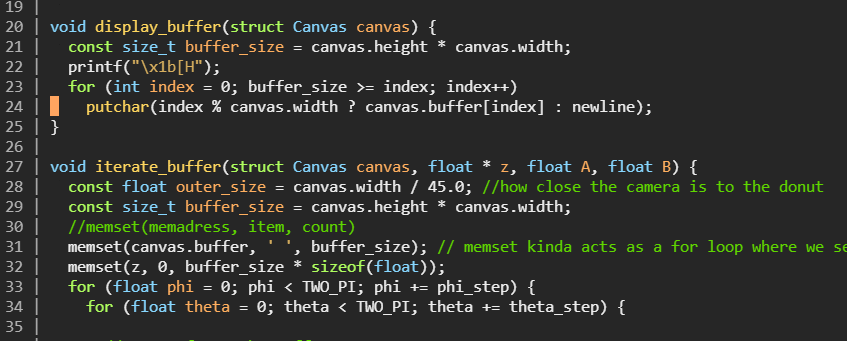

Im not quite sure how to fill this whole paragraph out yet, so for the purposes of this assignment this is just gonna be a couple of bullet points until i can think of better things to add
-Classes ive taken
-Comp-Sci I, II, III (taking this year)
-AP BC Calc (taking this year)
-AP Physics 1
-AP Physics C mech + E&M (taking this year)
-AP World History
-AP comp sci A (taking this year)
-AP Human Geography
-Self studied lin alg
-Self Studied AP AB Calc
-im self tought in javascript, css, html, python, c, and C++ as well as being tought swift. im also in the process of self learning java for comp sci A

-ive been in band all 4 years of highschool and been on the varsity marching line in the biggest marching band in america all through out that time
-last year i made a website heres the link to that
here
-my github page is linked here
-one of my personal goals for this year is to make a 3d graphic tool in C++ that works intierly the terminal.
-some projects ive made in comp sci include a working sudoku program equipt with an auto solver and auto game generator.
-a fractial generator using a lindenmayer system
-a website that has a full working front and backend
-ive also made mods and hack clients for geometry dash, btd6 and btd5
-made a discord bot that talks to an api im using for a future project (if i have the motivation to finish it lol)